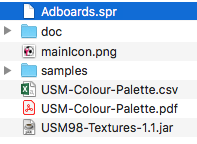
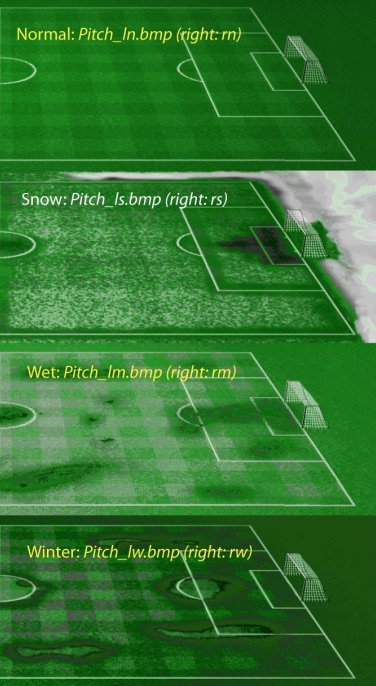

USM98 Textures Manager
1) Description
This small application is designed to help you to edit various textures in the game.
So far, you can edit:
- Adboards
- Pitches (field)
In a few words, you can convert some game texture files into a BMP format, edit them, and convert them the other way around.
We reverse engineered the system to be able to do this conversion. The conversion itself is done using a matching between the colors
supported by the game and "real ones". These colors are stored according to the RGB (Red, Green, Blue) standard.
TIP: I suggest you to convert everything into BMP at first and make a backup somewhere.
Special thanks to Dane Smallbone who took a lot of time to create the color palette and understood how
Adboards are stored, and to Brian JaQuay for the time spent to test and create content.
A CSV palette is given containing the RGB values that are used by the game. You can use a fancy software
to edit the BMP files, but the old fashioned MS Paint will perfectly do the job. This CSV stored palette is used
by the converter both ways. You can also find in the root folder a PDF file showing the color correspondance.
NOTE: the color palette is limited to the first 83 colors. The others color beyond this index are not used because
so far we faced some issues with them.
Note that you can, for some features, enable logging. It will generate a report at the root of the folder
and help you to see if you used some colors not supported by the game. In this case, the conversion will
still work, but the unknown colors will be replaced by a red one.
However, in order to help you with unknown colors, you can select the "Enable auto colors" feature. This functionality
will select the closest color in the palette. Sometimes it will do the job as the color palette is quite large, but sometimes it will give unexpected results.
The goal of this feature is to help you to reduce the amount of work to do when copy-paste images :)
TIP: in order to take it slowly step by step and to make the work easier for you, I suggest to try your work quite often
in order to avoid to waste a lot of time to understand which color is causing issues.
One last word: the code of this tool is open-sourced. You can find it here: https://github.com/ecourtial/usm98-textures-manager.
2) Installation
You need Java installed on your computer (java.com/en/download).
Then, move all the files wherever you want, in any specific folder of your computer.
Personally, I have a "USM98-Tools" directory on my Desktop where I put all the USM98 tools I use, for instance
the USM Tweaker.
You need to have both the files USM98-Textures-1.1.jar and USM-Colour-Palette.csv together in the same folder.
Note: I developed this application and tested it with USM98-99 (aka USM98 v2). I have no idea if it works
with the previous version.
3) Utilization
Copy all the SPR files from the game folder to the converter folder. To know which file you need, read the corresponding
section.
Then launch the converter: double click on the USM98-Textures-1.1.jar file. The application will start.
I suggest to make a copy of all the original files you want to edit, so you wouldn't have to reinstall
the game if you damage some file.
In the example in the below screenshot, you can see the content of the folder. It contains the converters files and the Adboards SPR file.

3.1) Adboards
To export the adboards into a BMP file, just copy the Adboards.spr file from the game folder into the folder where
you put the textures manager. Then click on the corresponding button to export it into a BMP file.
To do the opposite, you obviously need to have your BMP file (Adboards.bmp) in the folder. Just click in the other
button to export it into a SPR file and copy the new file into the USM folder.
TIP: the first time you will export addboards to BMP, you will notice a dark red line, on both side of the file. Replace it by
dark. Otherwise, when converting back to SPR, the red lines still will be here in the game.
3.2) Pitches
Pitches are the field files. It includes the grass, the lines, the goals posts and nets. So far you can only edit
everything but the posts and nets, because they are overriden by the game regarding weather conditions. But don't
worry, we are working on it, and you soon will be able to edit those elements too.
There are 4 pitches: winter, normal, snowy and wet. Each one of them is splitted in two part, left and right.
To see which one you want to edit, start a game, save it before the next match. Go in to the match but don't start it, just to look which one it is.
Then, in the documentation folder of the USM textures manager, you will see a file named "pitch-correspondance". It will help you
to see which one is the good to edit.

A small tip : when you wan to do some tests, you can reverse the left and right parts (rename left to right...). It will help you to see almost
the whole field without starting the match. Once you are ok with your work, you just have to give them their "real" names back.